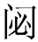

夫嘉葩失荫，薄寒夺其芳菲，思士陵天，骄阳毁其羽翮[252]。盖幽居一出，每仓皇于太空，坐驰[253]无穷，终陨颠于实有也。爰有静女[254]，长自山家，林泉陶其慧心，峰嶂隔兹尘俗，夜看朗月，觉天人之必圆，春撷繁花，谓芳馨之永住。虽生旧第，亦溅新流，既茁爱萌，遂通佳讯，排微波而径逝，矢坚石以偕行，向曼远之将来，构辉煌之好梦。然而年华春短，人海澜翻。远瞩所至，始见来日之大难，修眉渐颦，终敛当年之巧笑，衔深哀于不答，铸孤愤以成辞，远人焉居，长涂难即。何期忽逢二竖[255]，遽释诸纷，

绮颜于一棺，腐芳心于抔土。从此西楼良夜，凭槛无人，而中国韶年，乐生依旧。呜呼，亦可悲矣，不能久也。逝者如是，遗简廑存，则有生人[256]，付之活字。文无雕饰，呈天真之纷纶，事具悲欢，露人生之鳞爪，既娱以善始，遂凄恻而令终。诚足以分追悼于有情，散馀悲于无著者也。属为小引，愧乏长才，率缀芜词，聊陈涯略云尔。一九三二年七月二十日，鲁迅撰。
注 释
[251] 本篇最初以手迹制版印入金淑姿的《信》一书。该书于1932年以新造社名义印行，称“《断虹室丛书》第一种”。
淑姿 金淑姿（1908—1931），浙江金华人。
[252] 陵天毁羽翮的故事，出于希腊神话：伊卡洛斯和他的父亲巧匠德达拉斯用蜡粘着翅膀从空中逃离克里村岛，他未听从父亲的警告，飞近太阳，蜡被融化，坠落海中而死。思士，见《山海经·大荒东经》：“有司幽之国，帝俊生晏龙，晏龙生司幽，司幽生思士不妻，思女不夫。”
[253] 坐驰 静坐幻想的意思。《庄子·人间世》：“瞻彼阕者，虚室生白，吉祥止止，夫且不止，是之谓坐驰。”
[254] 静女 指娴静美丽的女子，见《诗经·邶风·静女》：“静女其姝”。
[255] 二竖 指病魔，引申为难治的病。《左传》成公十年：“（晋景）公梦疾为二竖子曰：‘彼良医也，惧伤我，焉逃之？’其一曰：‘居肓之上，膏之下，若我何？’”
[256] 生人 指程鼎兴（约1904—约1933），浙江金华人，金淑姿的丈夫。时为北新书局校对员。金死后他整理其遗书出版，并托同事费慎祥请鲁迅写序。